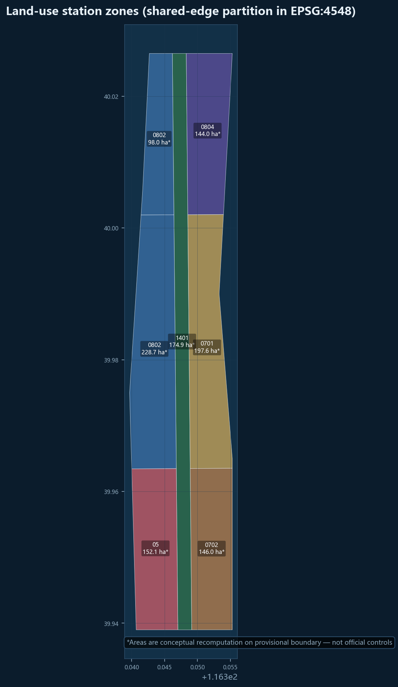
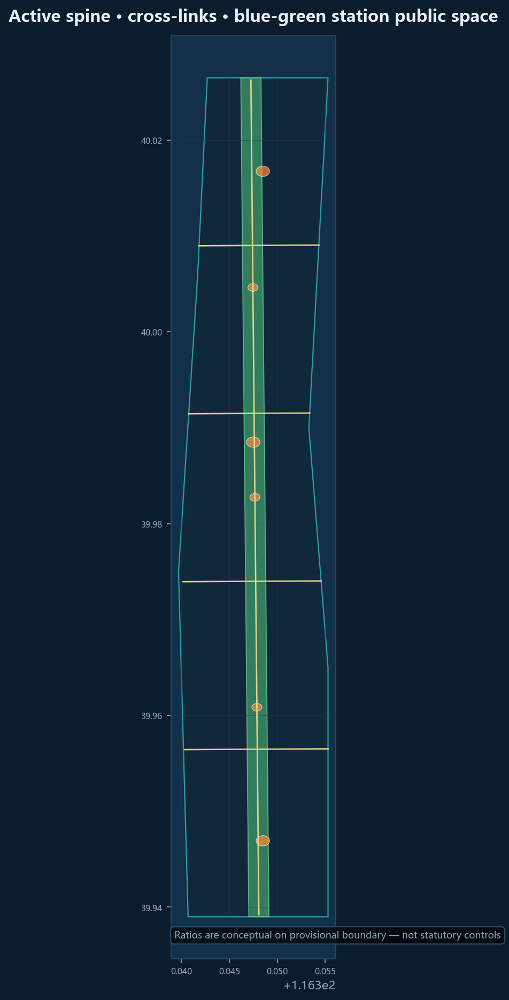

Research scope
~43.6 km² industry & regional synergy (interfaces to deepen)
One spine, three hubs, two wings, twelve platforms · provisional boundary concept package
Conceptual recomputation on provisional boundary — not official redline/statutory indicator/approval

* provisional recomputation
Goal: pass deterministic/spatial/visual/professional gates before formal review. Boundary is provisional_constraint.
~43.6 km² industry & regional synergy (interfaces to deepen)
~11.4 km² station network structure
Three hub detailed concepts
Full-stack test, open evaluation, governance pilots
Campus–community–builder transfer
Commerce and east–west mending


Three concept halls + twelve lightweight platforms; reversible construction.
S01–S12 cover mobility safety, accessibility, care scheduling, shop copilots, evaluation, shared labs, crowd, heritage, compliance, hackathons, microclimate, public art.